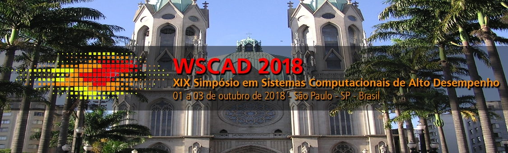

Programa do WEAC
Workshop sobre Educação em Arquitetura de Computadores
Programação
01/10/2018 (Segunda-feira)
WEAC S1 (Chair: Gabriel P. Silva (UFRJ))
| Horário | Título/Autores | |
|---|---|---|
| WEAC S1 | 9:00 - 9:30 |
Projetando Arquiteturas de Computadores numa abordagem de ensino prática e sistêmicaTiago Oliveira (UNIFESP), Denise Stringhini (UNIFESP), Alvaro Fazenda (UNIFESP) e José Jailson Santos Craibas (UNIFESP) |
| 09:00 - 09:30 |
Proposta de Ensino de Arquitetura de Computadores com Gamificação e Realidade AumentadaGeofrangite da Silva (UFERSA), Leiva Oliveira (UFERSA) e Silvio Fernandes (UFERSA) |
|
| 10:00 - 10:30 |
Abordagem para Ensino de Programação Paralela em Ambientes Heterogêneos Usando OpenCLLucas Valentim (PUC-Minas) e Henrique Cota Freitas (PUC-Minas) |
|
01/10/2018 (Segunda-feira)
WEAC S2 (Chair: Silvio Fernandes (UFERSA))
| Horário | Título/Autores | |
|---|---|---|
| WEAC S2 | 14:30 - 15:00 |
Uso de Aprendizagem Colaborativa em um curso de Arquitetura de ComputadoresLeonardo Araruna (USP) e Sarita Bruschi (USP) |
| 15:00 - 15:30 |
Uma Proposta de Framework para Apoio ao Ensino de Sistemas Digitais com o Uso de Sistema EmbarcadoMárcio Pacheco (USCS), Leonel Pablo Tedesco (USCS) e Diego Cardoso (USCS) |
|
| 15:30 - 16:00 |
|
|
02/10/2018 (Terça-feira)
WEAC S3 (Chair: Ricardo Ferreira (UFV))
| Horário | Título/Autores | |
|---|---|---|
| WEAC S3 | 9:00 - 9:30 |
Ensino de Arquitetura e as Predições Tomadas por Desempenho com as Predições não Tomadas pela Segurança: Vulnerabilidades Meltdown e SpectreAna Claudia Costa (UFV), Kristtopher Coelho (UFV), Jeronimo Penha (CEFET-MG), Ricardo Ferreira (UFV) e José Augusto Nacif (UFV) |
| 09:30 - 10:00 |
Métodos e Ferramentas para Aprendizado Prático de Arquitetura de Computadores e Eletrônica DigitalFernando Garcia (FES), Edinei Legaspe (FES) e Andréa Rodrigues (FES) |
|
| 10:00 - 10:30 |
Um Simulador Didático para o Ensino de Arquitetura de Computadores e Internet das CoisasEduardo Costa (UFRJ) e Gabriel P. Silva (UFRJ) |
|
02/10/2018 (Terça-feira)
WEAC Pôsteres
| Horário | Título/Autores | |
|---|---|---|
| WEAC Pôsteres | Coffe-Break |
Um Simulador Didático para o Ensino de SystemVerilogÍcaro Lima (UFCG) e Elmar Uwe K. Melcher (UFCG) |
| Coffe-Break |
Construção de Simuladores como Prática Pedagógica em Disciplinas de Arquiteturas de Computadores e Sistemas OperacionaisNatiele Lucca (UNIPAMPA) e Claudio Schepke (UNIPAMPA) |
|
| Coffe-Break |
O Impacto da Hierarquia de Memória na Manipulação de MatrizesRafael Schmid (IFMS) e Lucas Tavares (IFMS) |
|
Premiação
Melhor Artigo do WEAC 2018:
Projetando Arquiteturas de Computadores numa abordagem de ensino prática e sistêmicaTiago Oliveira (UNIFESP), Denise Stringhini (UNIFESP), Alvaro Fazenda (UNIFESP) e José Jailson Santos Craibas (UNIFESP) |
Menção Honrosa do WEAC 2018:
Uso de Aprendizagem Colaborativa em um curso de Arquitetura de ComputadoresLeonardo Araruna (USP) e Sarita Bruschi (USP) |